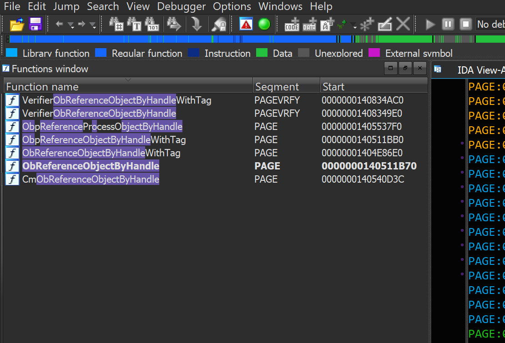
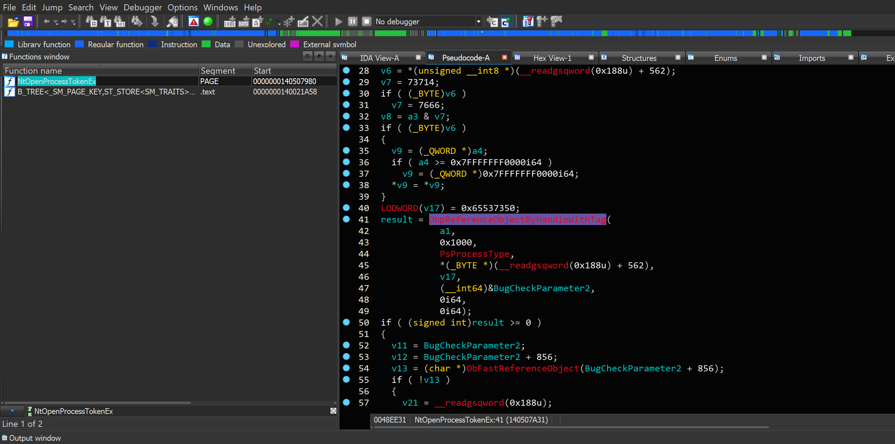
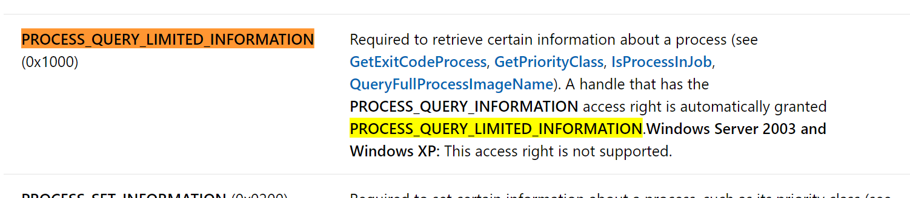
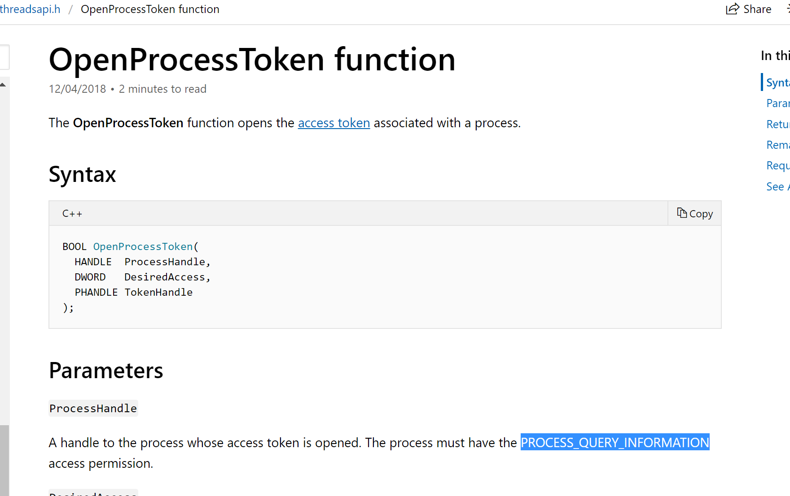
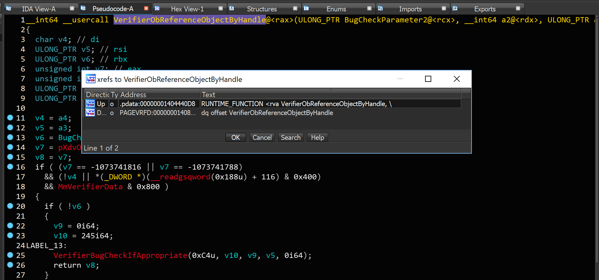
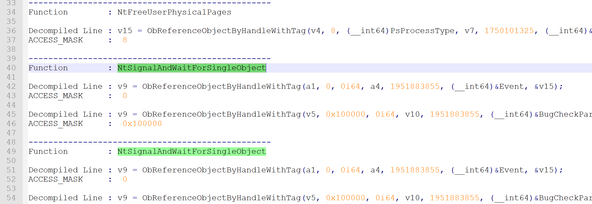

Introduction
Hi guys,
The title of this topic is somehow weird, if you think everything in MSDN is 100% match with what Microsoft implemented in Windows (like what I used to think), you’re definitely wrong, this post shows some proofs and in the last part, I’ll give you a solution to ACCESS_RIGHTS problem.
Before starting let’s talk about some backgrounds about “ACCESS_MASK”.
Most of the explanations derived from here.
Backgrounds
The ACCESS_MASK data type is a DWORD value that defines standard, specific, and generic rights. These rights are used in access control entries (ACEs) and are the primary means of specifying the requested or granted access to an object.
A securable object is an object that can have a security descriptor. All named Windows objects are securable. Some unnamed objects, such as process and thread objects, can have security descriptors too. For most securable objects, you can specify an object’s security descriptor in the function call that creates the object. For example, you can specify a security descriptor in the CreateFile and CreateProcess functions.
Each type of securable object defines its own set of specific access rights and its own mapping of generic access rights. For information about the specific and generic access rights for each type of securable object, see the overview for that type of object.
Here is the list of some objects in Windows (From Windows Internals) that have security descriptor and of course ACCESS_MASK.
1
2
3
4
5
6
7
8
9
10
11
12
13
14
15
16
17
18
1. Files, directories and volumes(NTFS file system)
2. Devices
3. Mailslots
4. Named and anonymous pipes
5. Jobs
6. Processes
7. Threads
8. Events, keyed events and event pairs
9. Mutexes, semaphores
10. Shared memory sections
11. I / O completion ports
12. LPC ports
13. Waitable timers
14. Access tokens
15. Windows stations
16. Desktops
17. Network shares
18. Services
The structure of ACCESS_MASK is like this :
1
2
3
4
5
6
7
8
9
10
11
typedef struct _ACCESS_MASK {
WORD SpecificRights;
BYTE StandardRights;
BYTE AccessSystemAcl: 1;
BYTE Reserved: 3;
BYTE GenericAll: 1;
BYTE GenericExecute: 1;
BYTE GenericWrite: 1;
BYTE GenericRead: 1;
}
ACCESS_MASK;
For more information you can read these two pdfs.
Motivation
That’s enough for theory, the reason for creating this post is during the past few days, I was reading “Reading Your Way Around UAC” which is sophisticated research about Windows Access Tokens.
The most interesting part for me was where James Forshaw wrote :
What’s going on? Basically, the documentation is wrong, you don’t need QueryInformation to open the process token only QueryLimitedInformation. You can disassemble NtOpenProcessTokenEx in the kernel if you don’t believe me:
1
2
3
4
5
6
7
8
9
10
11
12
13
NTSTATUS NtOpenProcessTokenEx(HANDLE ProcessHandle,
ACCESS_MASK DesiredAccess,
DWORD HandleAttributes,
PHANDLE TokenHandle) {
EPROCESS * ProcessObject;
NTSTATUS status = ObReferenceObjectByHandle(
ProcessHandle,
PROCESS_QUERY_LIMITED_INFORMATION,
PsProcessType, &
ProcessObject,
NULL);
...
}
Going back to Vista it’s always been the case that only QueryLimitedInformation was needed, contrary to the documentation.
For the first time, it was so weird for me, then I ask some of my friends about the things that are implemented in contrary with documentation in MSDN, so yeah, it seems there are things in contrary with MSDN.
That’s enough for me to lose my trust to Microsoft (at least for checking handles’ ACCESS_MASK ) thus I have to somehow check everything by my self but hey, it’s such a boring, isn’t it?
So, I decided to write an IDA Python Plugin for this purpose but let’s see what we really need to look for.
The first thing we need to know is how Windows checks for the desired access. The ObReferenceObjectByHandle function is designed for this purpose and as you can see from the MSDN:
The ObReferenceObjectByHandle routine provides access validation on the object handle, and, if access can be granted, returns the corresponding pointer to the object’s body.
If you search for this function in Ntoskrnl.exe using IDA Pro, you’ll see something like this :

Functions to check for access rights of a handle
It seems that there are other functions for this purpose, moreover, if you look at the decompiled source of NtOpenProcessTokenEx you see that ObReferenceObjectByHandle is no longer there instead it replaced by ObpReferenceObjectByHandleWithTag so we should also add this function into our list.

NtOpenProcessToken Decompiled Source
From the ObpReferenceObjectByHandleWithTag you can see that the contarary still remains in MSDN. If you look at the second argument to ObpReferenceObjectByHandleWithTag you can see 0x1000 and it’s, of course, PROCESS_QUERY_LIMITED_INFORMATION while the MSDN have mentioned something else.

PROCESS_QUERY_LIMITED_INFORMATION
The documentation for OpenProcessToken:

OpenProcessToken
Functions to Test
Actually, we just need to test the following function (from the functions available in IDA search results):
CmObReferenceObjectByHandle
ObReferenceObjectByHandleObp
ReferenceObjectByHandleWithTag
ObReferenceObjectByHandleWithTag
Other functions are not really important to us, as I saw their XREFs, for example :

VerifierObReferenceObjectByHandle
As you can see the above function doesn’t seems to valuable in our case from the XREFs results.
IDA Python Script
The following code is the IDA Python script for finding XREFs of our target function then find the second argument from the decompiled source:
1
2
3
4
5
6
7
8
9
10
11
12
13
14
15
16
17
18
19
20
21
22
23
24
25
26
27
28
29
30
31
32
33
34
35
36
37
38
39
40
41
42
43
44
45
46
47
48
49
50
51
52
53
54
55
56
57
58
59
#!/usr/bin/python
# -*- coding: utf-8 -*-
from idautils import *
from idaapi import *
from idc import *
FunctionName = 'ObReferenceObjectByHandle'
def PrintDecompiledLine(line):
print 'Decompiled Line : ' + line
print 'ACCESS_MASK : ' + line.split(FunctionName)[1].split(','
)[1]
print ''
# Finding Function
ea = BeginEA()
# for funcAddr in Functions(SegStart(ea), SegEnd(ea)):
for funcAddr in Functions(0x140001000, 0x140909410):
funcName = GetFunctionName(funcAddr)
if funcName == FunctionName:
print 'Function %s is located at 0x%x' % (funcName, funcAddr)
print '====================================================='
ea = funcAddr
for ref in CodeRefsTo(ea, 1):
print 'Function : ' + GetFunctionName(ref)
print ''
try:
cfunc = idaapi.decompile(ref)
except:
print 'Failed to decompile : ' + GetFunctionName(ref)
multiline = False
multilinestring = ''
# print cfunc
for item in str(cfunc).split('\n'):
if multiline:
if ')' in item and not '(' in item:
multiline = False
multilinestring += item.strip()
PrintDecompiledLine(multilinestring)
else:
multilinestring += item.strip()
elif FunctionName in item:
if ')' in item:
PrintDecompiledLine(item.strip())
else:
multiline = True
multilinestring = item.strip()
print '-------------------------------------------------'
Results
Here is the results, you can use them if you don’t have IDA Pro:

Note: If you want to use the results, you can find functions which start with (NT*) that’s because these functions have a pair in user-mode ntdll, so if your user-mode function ends to a ntdll native function then you can search for the same function and see the reall access rights.
Conclusion
In this post, you saw how it might be different, the real implementation over documentation so as a conclusion if you are a security researcher, it’s always better to check the real source code (decompiled) instead of just trusting the documentation.
That’s it guys, hope you enjoy it.
References
[1] Reading Your Way Around UAC (Part 2) - (https://tyranidslair.blogspot.com/2017/05/reading-your-way-around-uac-part-2.html)
[2] ObReferenceObjectByHandle function - (https://docs.microsoft.com/en-us/windows-hardware/drivers/ddi/content/wdm/nf-wdm-obreferenceobjectbyhandle)
[3] Process Security and Access Rights - (https://docs.microsoft.com/en-us/windows/desktop/procthread/process-security-and-access-rights)
[4] Enumerate all XefsTo a Segment in IDAPython - (https://reverseengineering.stackexchange.com/questions/3669/enumerate-all-xefsto-a-segment-in-idapython)
[5] OpenProcessToken function - (https://docs.microsoft.com/en-us/windows/desktop/api/processthreadsapi/nf-processthreadsapi-openprocesstoken)
[6] About the ACCESS_MASK Structure - (https://blogs.msdn.microsoft.com/openspecification/2010/04/01/about-the-access_mask-structure/)
[7] ACCESS_MASK - (https://docs.microsoft.com/en-us/windows/desktop/SecAuthZ/access-mask)
[8] ObpReferenceProcessObjectByHandle - (http://www.codewarrior.cn/ntdoc/wrk/ob/ObpReferenceProcessObjectByHandle.htm)
Comments powered by Disqus.